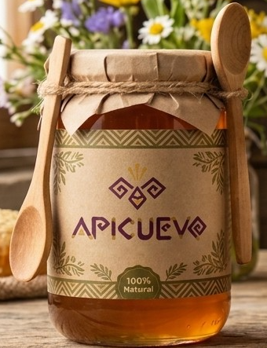
Edición Natural
500 g
Frasco con tapa de papel kraft atada con pita y cuchara de madera de regalo.
Cuevo, Chaco cruceño, Bolivia
Miel de abeja multifloral, cosechada a mano en Cuevo. Sin calentar, sin mezclas y sin nada añadido: solo lo que las abejas juntan de las flores del Chaco.
Apicuevo
Es multifloral porque las abejas no eligen una sola flor: visitan lo que el monte va abriendo, de la primavera al verano. Por eso el color y el aroma cambian un poco de una cosecha a otra.
Toca una flor para ver cuándo florece y qué aporta a la miel. La franja marrón marca la temporada de cosecha.
Apicuevo es la Asociación de Apicultores de Cuevo, una organización de productores de miel del municipio de Cuevo, en el Chaco boliviano.
Nace Apicuevo para mejorar la producción y la venta de miel.
Obtiene su personería jurídica mediante la Resolución N° 320/2011.
Participa en iniciativas de digitalización junto a la Fundación ACLO y Manos Unidas, y en procesos con el Banco Mundial bajo el programa Alianzas Rurales (PAR III).
Hoy reúne a familias y unidades productivas locales de la región, como Apícola La Penca.
Las grecas de nuestra etiqueta vienen de los tejidos de la región. La espiral escalonada es el camino que hace la abeja entre la flor y la colmena.
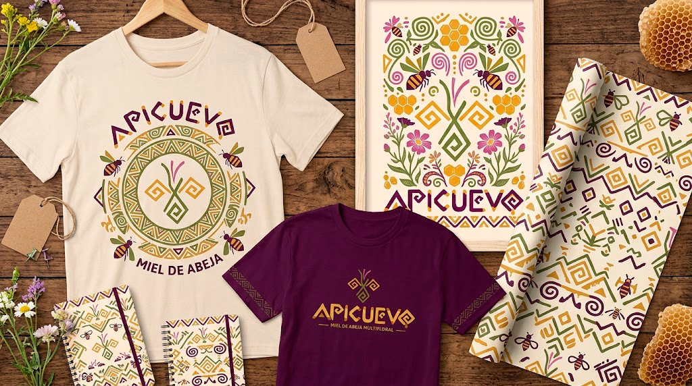
No calentamos la miel para filtrarla más rápido. Así conserva su aroma, sus enzimas y el polen de las flores que la hicieron.
Las colmenas se ubican cerca del monte nativo, lejos de cultivos fumigados.
Las abejas recogen néctar y polen durante semanas y lo convierten en miel dentro del panal.
Solo sacamos los marcos operculados: celdas que las abejas ya sellaron porque la miel está madura.
Se desopercula, se centrifuga y se filtra por malla a temperatura ambiente.
Cada frasco lleva su número de lote y fecha, para saber de qué cosecha viene.

500 g
Frasco con tapa de papel kraft atada con pita y cuchara de madera de regalo.
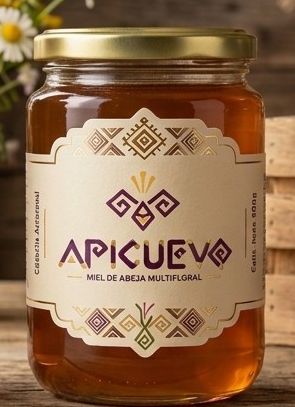
500 g
Nuestra miel de todos los días, en frasco de vidrio con tapa metálica.
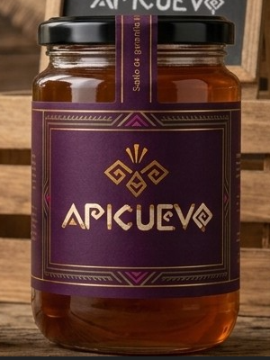
500 g
Miel de la mejor cosecha del año, con faja de seguridad numerada.
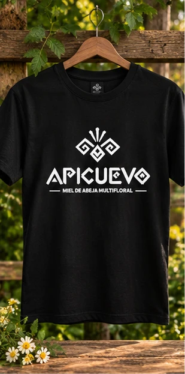
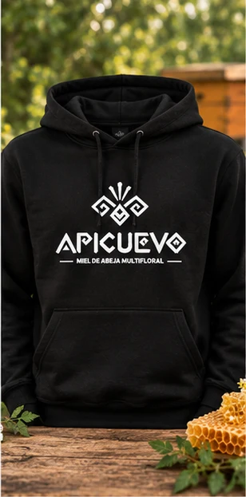
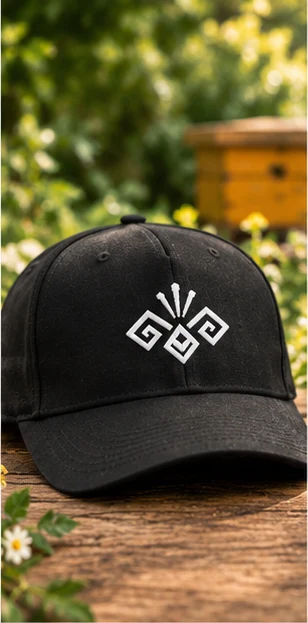
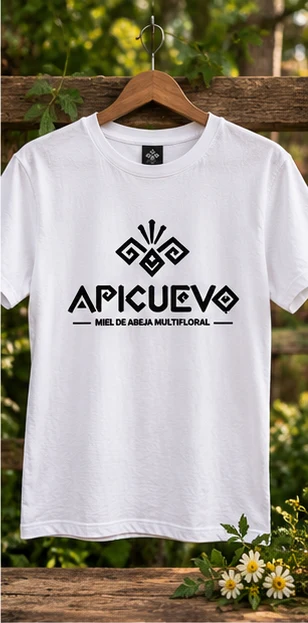
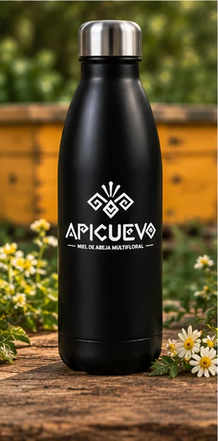
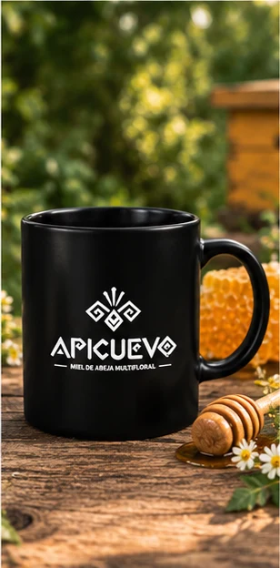
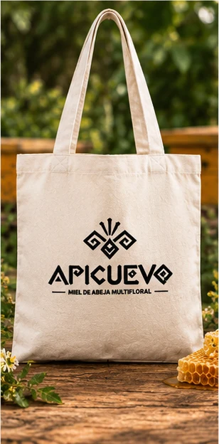
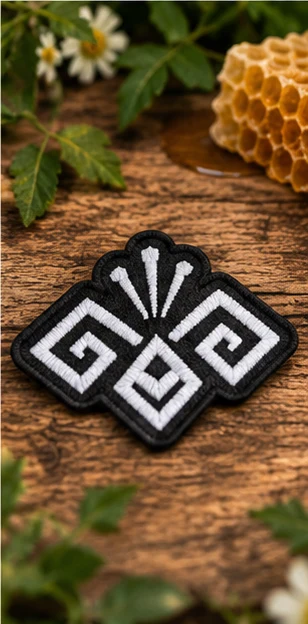
¿Se puso dura? Es buena señal.
La miel pura cristaliza con el tiempo y con el frío. Es la glucosa ordenándose en cristales, no azúcar agregada. Las mieles adulteradas con jarabe casi nunca lo hacen.
Pon el frasco destapado en baño maría con agua tibia, sin pasar de 40 °C, y revuelve de vez en cuando. No la metas al microondas: el calor fuerte le quita aroma y enzimas.
Bien cerrada, a temperatura ambiente y lejos del sol y la humedad. En la heladera se cristaliza más rápido. Usa siempre una cuchara seca.
No se recomienda dar miel a niños menores de 1 año, porque puede causar botulismo infantil. A partir del año no hay problema.
Bien guardada, la miel se conserva mucho tiempo. En cada frasco está la fecha de consumo preferente y el número de lote de su cosecha.
Porque es multifloral. Según las flores que abrieron esa temporada, puede salir más clara y suave o más oscura e intensa. Las dos son la misma miel pura.